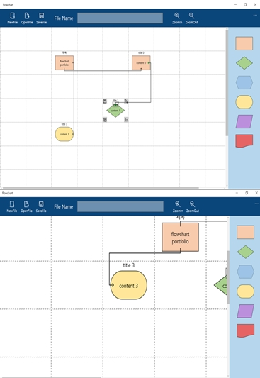
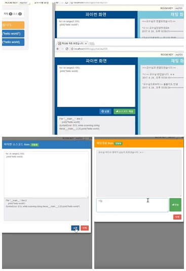
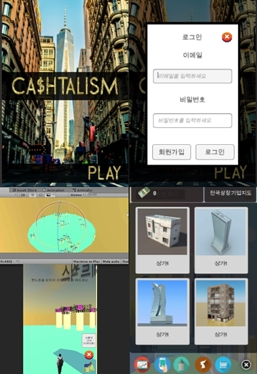
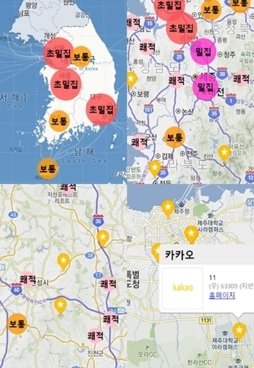
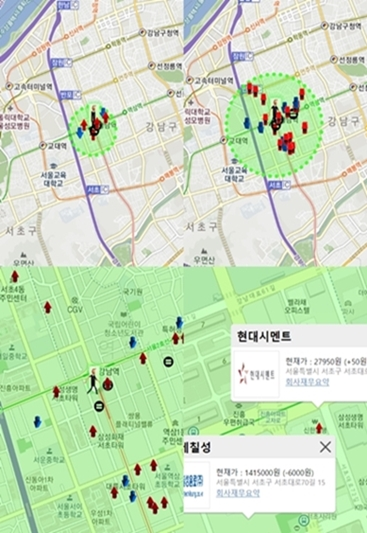
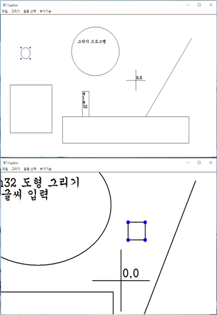
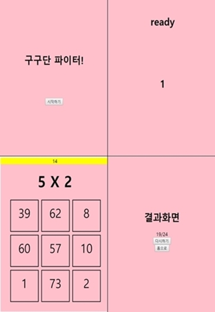
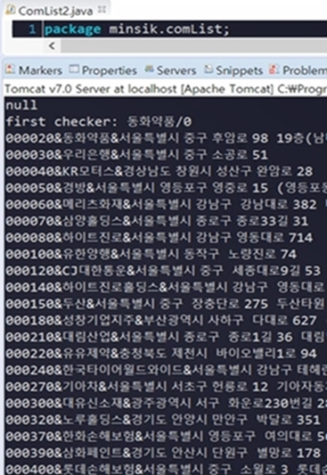
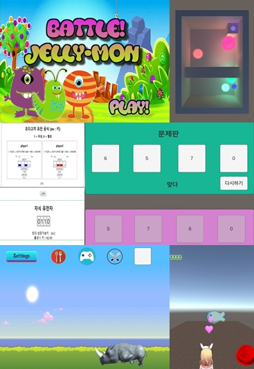
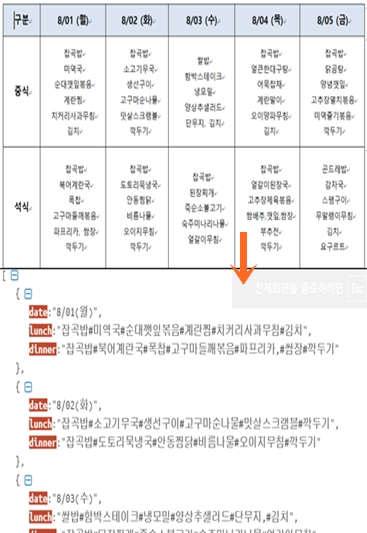

1. 윈10 순서도 작성 어플

UWP
/
XAML
/
Git
C++/CX XAML
- 순서도를 작성, 저장, 불러올 수 있는 윈도우 10 어플리케이션
- Git-hub, Source-Tree를 사용해 버젼관리
| 언어 | 도구 |
|---|---|
| C++/CX XAML | UWP / XAML / Git |
| 클라이언트 (담당기능) | |
|---|---|
| 1. 화면 설계 | MainPage, GridPage 두 개의 페이지로 분할 후 서로 데이터를 넘겨주는 방식으로 화면 설계 |
| 2. Grid style | 스스로 이벤트를 발생시킬 수 있는 Grid들을 타일 형식으로 깐뒤, 각각 행열로 id 성격의 Name을 붙여줌. 이벤트를 받아 이벤트가 온 소스의 Name을 파싱하는 방식으로 이벤트를 발생시킨 객체를 추적가능. |
| 3. Naming | 각각의 요소들에 Name을 붙여 파싱을 통해 추적이 가능하게끔 설계 |
| 4. Drag & Drop | 드래그 앤 드롭 스타일로 도형이동 및 생성, 가이드 팝업생성. 다른 도형 위로 드래그는 금지되게끔 구현 |
| 5. 버튼 생성 및 숨기기 | 현재 Focus된 도형에 기능 버튼들을 생성, Focus가 해제되면 문서트리 상에서 보이기 속성을 수정함으로써 버튼을 숨겨준다. |
| 6. SymbolInfo | 도형들은 SymbolInfo라는 클래스로 규정, 생성, 수정때마다 App단의 Vector컨테이너에 저장, 수정된다. |
| 7. 스타일 분리 | Grid의 높이, 너비, 도형 종류 등의 리소스들은 XAML단으로 분리, 공유시켜 유지보수를 쉽게하고 메모리 낭비를 줄임. |
2. 파이썬 교육용 채팅 프로그램

WebSocket
/
Spring
/
Brython
/
JQuery
/
BootStrap
Java JavaScript
-원클릭으로 채팅방을 개설하고 URL을 통해 채팅방에 참여할 수 있는 시스템
-간단한 파이썬 소스코드를 프론트 단에서 해석할 수 있고 교수님께 전송가능
| 언어 | 도구 |
|---|---|
| Java JavaScript | WebSocket / Spring / Brython / JQuery / BootStrap |
| 클라이언트 | |
|---|---|
| 1. 싱글페이지 | BootStrap의 modal로 싱글페이지 화면 구성 |
| 2. Brython | Brython 라이브러리를 사용, 프론트에서 파이썬 스크립트 해석 모방 |
| 서버 | |
|---|---|
| 1. WebSocket | 웹소켓으로 실시간 반응 구현 |
1. 포켓몬고 기능 구현

Unity3D
/
Android
/
Spring
/
MySQL
C# Java
- 현재 위치 주변의 상장회사 정보와 그들의 실제 주식정보를 바탕으로 진행되는 게임.
- 포켓몬고의 실시간 3D위치 확인 및 던지기 기능 구현 및
클라이언트, 서버, UI
디자인 기술 습득
| 언어 | 도구 |
|---|---|
| C# Java | Unity3D / Android / Spring
/ MySQL/ AWS |
| 클라이언트 | |
|---|---|
| 1. uGui canvas | 모바일을 고려해 유니티의 uGui와 canvas를 사용한 상대크기 UI 설계 및 제작 |
| 2. WebView | WebView 플러그인을 사용해 앱 내에서 상대크기 웹브라우저 띄우기 |
| 3. WebCamTexture | 앱내에서 카메라 켜기 및 끄기 |
| 4. location | 현재 위도, 경도 정보 얻기 |
| 5. 동전던지기 | 손가락의 swipe 방향, 시간에 따라 동전이 날아가는 힘과 각도가 결정 |
| 6. 3D 기업 | 서버로 부터 받은 정보를 파싱해 현재 위치 주변 상장기업을 3D로 보여줌. |
| 7. login, join | 기본적 로그인, 회원가입 기능 구현 |
| 8. slide menu | canvas와 애니메이션을 통한 slide in, out menu 구현 |
| 서버 | |
|---|---|
| 1. Spring JSP | Spring을 이용해 서버 제작 |
| 2. MVC-pattern | Spring 서버를 만들기 전에 MVC 패턴을 적용한 JSP, Servlet만을 이용한 서버로 프로토타입 제작 |
| 3. MySQL | DBMS는 MySQL 사용 |
| 4. AWS | AWS에 톰캣 설치후 WAR파일 배포 |
| 5. Exerd | 데이터 설계는 exerd 프로그램 사용 |
2. 대한민국 상장회사 지도

Jquery
/
Daum-api
/
json
/
ajax
JavaScript HTML5
- 대한민국 상장회사(kospi + kosdaq) 위치 정보 및 클러스터링 웹페이지
| 언어 | 도구 |
|---|---|
| JavaScript HTML5 ajax | Jquery / Daum-API / JSON |
| 클라이언트 | |
|---|---|
| 1. 클러스터링 | 다음 API를 사용해 기업 클러스터링 및 지도표시 구현 |
| 2. JSON | DB를 따로 두지 않고 JSON파일에 기업 위치정보 기록 |
3. 현재 위치주변 기업정보 지도

JSP
/
MySQL
/
Unity3D
/
Open-APIs
/
Jquery
Java C# JavaScript HTML5
- 위도, 경도, 검색거리를 지정해주면 반경 안의
상장회사들을 주식 등락 표시와 함께 나타내줌
- 팝업 메뉴로 회사의 주가, 로고, 주소, 재무정보 링크 생성
| 언어 | 도구 |
|---|---|
| Java C# JavaScript HTML5 | JSP / MySQL / Unity3D
/ DAUM-API/ NAVER-API / Jquery
/ Simple-Json |
| 클라이언트 | |
|---|---|
| 1. 지도 관련 | 검색범위 표시, 회사정보 팝업 등 지도 관련 모두 다음 지도 API활용 |
| 서버 | |
|---|---|
| 1. JSP | JSP 한 페이지로 구성 |
| 2. Simple-Json | Simple-Json 라이브러리를 활용해 json생성 및 파싱 |
| 3. 주가정보 조회 | Naver finance API로 주가관련 정보 조회 |
| 4. MySQL | DBMS는 MySQL 사용 |
4. WIN32 페인트 툴

WIN32
/
STL
/
MS-XML Parser
C++
- 저장, 불러오기가 가능한 윈도우즈 페인트 툴
- 이미 만들어진 모듈 사용을 최대한 배제하고 모두 직접 라이브러리 형태로 제작해보는 데 중점
- 최대한 OOP적 설계를 하기 위해 노력
| 언어 | 도구 |
|---|---|
| C++ | WIN32 / STL / MS-XML
parser |
| 클라이언트 | |
|---|---|
| 1. 인터페이스 | Shape라는 인터페이스(추상 클래스)를 만든 다음, 원, 사각형, 선이 이를 implement하여 구현하는 방식사용 |
| 2. mLineMethods | EDIT_CONTROL이라는 기존 모듈을 사용하지 않고, 글자 픽셀 너비를 대조하며 개행시켜주는 로직 직접 구현 |
| 3. mKeyboard | 글자입력, 한영 변환, 한글 조립중, 조립 완료, 기능키 메시지를 윈도우로 직접받아 직접 구현 |
| 4. mMouse | 물리적으로 절대좌표 밖에 구하지 못하므로 논리 좌표 변환, 좌상단 우상단 자동 변환 등 프로그램 상 필요한 마우스 로직 직접구현 |
| 5. mOptions | Zoom Level 등 프로그램 옵션 사항등 다루는 모듈, 캡슐화 구현 및 실습 노력 |
| 6. mOriginPoint | 중심 원점의 추상화 |
| 7. mScreenLineContainer | 캐럿(커서)를 구현하기 위해서 현재 커서의 위치, 임시 문자열, 글자 갯수, 행 인덱스 등 각종 정보를 기록하고 관리하는 모듈이 필요했음. 삼중 map을 써서 3차원 배열 스타일로 몇 문단, 몇 줄의 처음과 끝 인덱스를 기록 |
| 8. mShapeContainer | Shape형 클래스들을 관리하는 컨테이너, STL의 Vector 자료구조로 구현 |
| 9. mString | C 스타일의 문자와 문자열을 공부할 겸, 표준 String 라이브러리를 사용하지 않고 직접 구현해봄. |
| 10. mShapeContainer | Shape형 클래스들을 관리하는 컨테이너 |
| 11. mTextEditor | 메모장을 추상화한 클래스, mKeyboard, mTextSource의 결합체 |
| 12. mTextSource | 메모장에서 문단을 추상화한 클래스, 개행을 위해 링크드 리스트로 텍스트 저장 |
| 13. mTextPixel | 텍스트의 픽셀 길이에 관한 모든 기능을 담은 메서드 묶음 |
| 14. 저장, 불러오기 | xml, 커스텀 파일 확장자로 파일 저장, 불러오기 구현.(xml의 경우 msxml 사용) |
| 15. 풀링 | 마우스 오른쪽 드래그로 작동하는 풀링기능 구현 |
| 16. 줌기능 | 마우스 휠로 작동하는 줌인, 줌아웃 구현(XFORM 사용) |
| 17. 도형 기본 기능 | 도형 이동, 선택, 사이즈 조절, 글자 입력 및 글자 위치 자동 조절 구현 |
5. 구구단 파이터

JSP
/
Servlet
/
Jquery
Java JavaScript HTML5
- 30초동안 최대한 많은 구구단을 맞히는 게임.
- Front-Dispatcher, MVC패턴 구현 실습
| 언어 | 도구 |
|---|---|
| Java JavaScript HTML5 | JSP / Servlet / Jquery |
| 클라이언트 | |
|---|---|
| 1. 타이머 | Java-Script로 타이머 구현 |
| 2. 게임 로직 | Java-Script Math 라이브러리로 앞 중복이 없는 구구단 로직 구현 |
| 3. 게임 화면 | Jquery로 마우스 오버된 버튼 색깔 바꾸기 |
| 4. 화면 분할 | include 방식으로 타이머와 게임화면이 분할되고 동시에 화면에 나오도록 구현 |
| 서버 | |
|---|---|
| 1. Dispatcher | 서블릿으로 구현한 프론트 컨트롤러를 두어 각역할별 jsp 페이지 컨트롤러로 포워드 되도록 구현 |
| 2. Session | 단발성 게임으로 굳이 DB를 둘 이유가 없어 한 게임당 새로운 세션을 만들고 게임 결과를 저장하도록 구현 |
6. 웹 크롤링

Jsoup
/
Json-simple
/
Dart-API
/
Naver-API
/
Google-API
/
Daum-API
Java
- 기업 게임의 근간이 되는 기업코드, 좌표, 주소, 로고 url을 크롤링 및 파싱하는 과정
- 여러 Open-Api들과 라이브러리를 써서 크롤링한 결과를 저장, 파싱 및 결합하여 DB에 저장
| 언어 | 도구 |
|---|---|
| Java | Jsoup / Json-simple / Dart-API
/ Naver-API / Google-API / Daum-API |
| 클라이언트 | |
|---|---|
| 1. 상장기업코드 | KOSDAQ, KOSPI 상장 기업 HTML소스를 긁어와 파싱, 상장기업목록 및 기업코드 획득 |
| 2. 상장기업주소 | 획득한 기업코드로 Dart-API를 사용하여 조회 및 획득 |
| 3. 상장기업좌표 | Daum과 Google 좌표 검색 Api를 번갈아 가며 사용 (하루 제한 검색횟수 때문) |
| 4. 기업로고 url | 기업 목록을 가지고 자동으로 구글 검색 뒤 respoonse 결과를 파싱해 기업 로고 url 획득 |
7. Unity, Jquery 습작들

Unity-3D
/
Jquery
C# JavaScript
- 기업 게임을 만들기 전에 각종 기능들을 구현해보며 연습
| 언어 | 도구 |
|---|---|
| C# JavaScript | Unity-3D / Jquery |
| 클라이언트 | |
|---|---|
| 1. 움직이는 글자 | 하강, 위아래로 움직이는 애니메이션을 만들어 게임 첫 화면에 적용 |
| 2. 중력센서 | 폰의 기울어짐을 감지해 공을 움직이는 게임 구현 |
| 3. Slide Menu | 애니메이션으로 구현한 slide in-out menu 구현 |
| 4. 숫자게임 | 제시되는 4개의 숫자를 순서에 맞게 눌러야 되는 미니 게임 |
| 5. 물체 이동 | 코사인 함수를 이용해 자연스럽게 속도가 감소, 증가 하는 물체 구현 |
| 6. 유전공식 | 두 몬스터의 키와 유전자에 따라 탄생시 키와 최대 성장폭이 결정되는 공식 제작, Jquery를 사용해 시각화 |
8. docx 식단표 json 변환기

Jsoup
/
XWPFWordExtractor
Java
- 식단을 폰으로 간편하게 볼 수 있는 방법이 없어 제작
- docx 파일에서 패턴을 찾아내 json으로 변환
| 언어 | 도구 |
|---|---|
| Java | Jsoup / XWPFWordExtractor |
| 클라이언트 | |
|---|---|
| 1. docx파싱 | XWPFWordExtractor로 docx 파일을 읽어들인 후 식단표 메뉴의 패턴을 찾아 일자와 메뉴들을 구분 및 정리, 완료된 후에는 json형태로 파일 배출 |